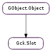

| static | from_handle(module, slot_id) |
| enumerate_objects(match, options) | |
| equal(slot2) | |
| get_handle() | |
| get_info() | |
| get_mechanism_info(mech_type) | |
| get_module() | |
| get_token_info() | |
| has_flags(flags) | |
| hash() | |
| match(uri) | |
| open_session(options, cancellable) | |
| open_session_async(options, cancellable, callback, *user_data) | |
| open_session_finish(result) |
| Name | Type | Flags | Description |
|---|---|---|---|
| handle | int | r/w/c | PKCS11 Slot ID |
| module | Gck.Module | r/w/c | PKCS11 Module |
None
| Name | Type | Access |
|---|---|---|
| parent | GObject.Object | r |
Bases: GObject.Object
Represents a PKCS11 slot.
| Parameters: |
|
|---|---|
| Returns: | The new Gck.Slot object. |
| Return type: |
Create a new Gck.Slot object for a raw PKCS\#11 handle.
| Parameters: |
|
|---|---|
| Returns: | a new enumerator |
| Return type: |
Setup an enumerator for listing matching objects on the slot.
If the match Gck.Attributes is floating, it is consumed.
This call will not block but will return an enumerator immediately.
| Parameters: | slot2 (Gck.Slot) – a pointer to the second Gck.Slot |
|---|---|
| Returns: | True if slot1 and slot2 are equal. False if either is not a Gck.Slot. |
| Return type: | bool |
Checks equality of two slots. Two Gck.Slot objects can point to the same underlying PKCS\#11 slot.
| Returns: | the raw CK_SLOT_ID handle |
|---|---|
| Return type: | int |
Get the raw PKCS\#11 handle of a slot.
| Returns: | the slot information, when done, use Gck.SlotInfo.free () to release it. |
|---|---|
| Return type: | Gck.SlotInfo |
Get the information for this slot.
| Parameters: | mech_type (int) – The mechanisms type to get info for. |
|---|---|
| Returns: | the mechanism information, or None if failed; use Gck.MechanismInfo.free () when done with it |
| Return type: | Gck.MechanismInfo |
Get information for the specified mechanism.
| Returns: | The module, you must unreference this after you’re done with it. |
|---|---|
| Return type: | Gck.Module |
Get the module that this slot is on.
| Returns: | the token information; when done, use Gck.TokenInfo.free () to release it |
|---|---|
| Return type: | Gck.TokenInfo |
Get the token information for this slot.
| Parameters: | flags (int) – The flags to check. |
|---|---|
| Returns: | Whether one or more flags exist. |
| Return type: | bool |
Check if the PKCS11 slot has the given flags.
| Returns: | An integer that can be used as a hash value, or 0 if invalid. |
|---|---|
| Return type: | int |
Create a hash value for the Gck.Slot.
This function is intended for easily hashing a Gck.Slot to add to a GLib.HashTable or similar data structure.
| Parameters: | uri (Gck.UriData) – the uri to match against the slot |
|---|---|
| Returns: | whether the URI matches or not |
| Return type: | bool |
Check whether the PKCS\#11 URI matches the slot
| Parameters: |
|
|---|---|
| Raises: | |
| Returns: | a new session or None if an error occurs |
| Return type: |
Open a session on the slot. If the ‘auto reuse’ setting is set, then this may be a recycled session with the same flags.
This call may block for an indefinite period.
| Parameters: |
|
|---|
Open a session on the slot. If the ‘auto reuse’ setting is set, then this may be a recycled session with the same flags.
This call will return immediately and complete asynchronously.
| Parameters: | result (Gio.AsyncResult) – The result passed to the callback. |
|---|---|
| Raises: | GLib.GError |
| Returns: | the new session or None if an error occurs |
| Return type: | Gck.Session |
Get the result of an open session operation. If the ‘auto reuse’ setting is set, then this may be a recycled session with the same flags.